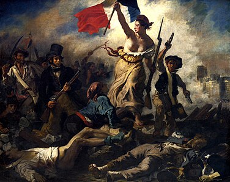

Liberalismo
El liberalismo es una filosofía política y económica que se fundamenta en la defensa de la libertad individual, la igualdad ante la ley y la limitación del poder del Estado. Tiene sus raíces en el pensamiento ilustrado del siglo XVIII y ha evolucionado a lo largo del tiempo, dando lugar a diversas corrientes y enfoques.
Principios Fundamentales del Liberalismo
1. Libertad Individual: En el corazón del liberalismo está la idea de que cada individuo tiene derecho a vivir su vida según sus propios términos, sin interferencia indebida del Estado o de otros individuos. Esta libertad individual se extiende a una variedad de áreas, incluida la libertad de expresión, la libertad de religión, la libertad de asociación y la libertad económica para participar en transacciones voluntarias.
2.Estado de Derecho: El liberalismo defiende la idea de que todas las personas, incluidos los gobernantes y los funcionarios del gobierno, están sujetas a la ley. Esto implica que el gobierno debe actuar de acuerdo con un marco legal establecido y que todas las decisiones y acciones deben estar sujetas a revisión y rendición de cuentas.
3. Democracia Representativa: En un estado liberal, el poder político deriva del consentimiento de los gobernados. La democracia representativa permite a los ciudadanos elegir a sus representantes a través de elecciones libres y justas, asegurando así que el gobierno sea responsable ante la población y que los intereses de las minorías estén protegidos.
4. Economía de Mercado: El liberalismo aboga por un sistema económico basado en la propiedad privada, la libre empresa y la competencia. Se argumenta que el mercado libre es el mejor mecanismo para asignar recursos de manera eficiente, estimular la innovación y el crecimiento económico, y maximizar el bienestar de la sociedad en su conjunto.
5. Derechos Individuales: Los liberales reconocen una serie de derechos fundamentales inherentes a cada persona, incluidos el derecho a la vida, la libertad y la propiedad. Estos derechos no pueden ser violados por el gobierno o cualquier otra institución y deben ser protegidos y garantizados por el Estado.
Evolución Histórica del Liberalismo
Liberalismo Clásico: Surgió en el siglo XVII y XVIII con filósofos como John Locke y Adam Smith. Locke defendía la protección de los derechos naturales y la limitación del poder del gobierno, mientras que Smith abogaba por la economía de libre mercado.
Liberalismo Moderno: A lo largo del siglo XIX, el liberalismo evolucionó para incluir preocupaciones sociales y económicas, destacando figuras como John Stuart Mill, quien defendía tanto la libertad individual como la intervención estatal para corregir injusticias sociales.
Neoliberalismo: Surgió en el siglo XX como una reacción contra el intervencionismo estatal excesivo, abogando por la reducción de la regulación gubernamental y la promoción de la libre empresa y la globalización económica.
Corrientes del Liberalismo
1. Liberalismo Clásico: Se centra en la libertad individual y la limitación del poder del gobierno, defendiendo la economía de mercado y la propiedad privada.
2. LLiberalismo Social: Busca un equilibrio entre la libertad individual y la justicia social, abogando por políticas de bienestar, educación pública y redistribución de la riqueza para garantizar igualdad de oportunidades.
3.Neoliberalismo: Pone énfasis en la desregulación, la privatización y la liberalización económica, con la creencia de que el mercado libre es la mejor manera de alcanzar el crecimiento económico y el desarrollo.
Críticas al Liberalismo
Desigualdad Económica: Se argumenta que el liberalismo puede llevar a una concentración de riqueza y poder en manos de unos pocos, exacerbando las desigualdades sociales y económicas.
Individualismo Excesivo: Algunos críticos sostienen que el énfasis en la libertad individual puede llevar al egoísmo y la falta de solidaridad social, descuidando la importancia de la comunidad y el bien común.
Imperialismo Cultural: Se ha acusado al liberalismo de imponer valores occidentales sobre otras culturas, sin respetar sus tradiciones y sistemas de valores.
El liberalismo ha sido una fuerza influyente en la conformación de las sociedades modernas, promoviendo la libertad, la igualdad y la democracia. Aunque enfrenta críticas y desafíos, sigue siendo una ideología relevante en el panorama político contemporáneo, con diversas interpretaciones y aplicaciones en diferentes contextos sociales y económicos.
REPRESENTACION

Video
Bibliografía
- Freeden, M. (1996). Ideologies and Political Theory: A Conceptual Approach. Oxford University Press, 1(1), 1-386.